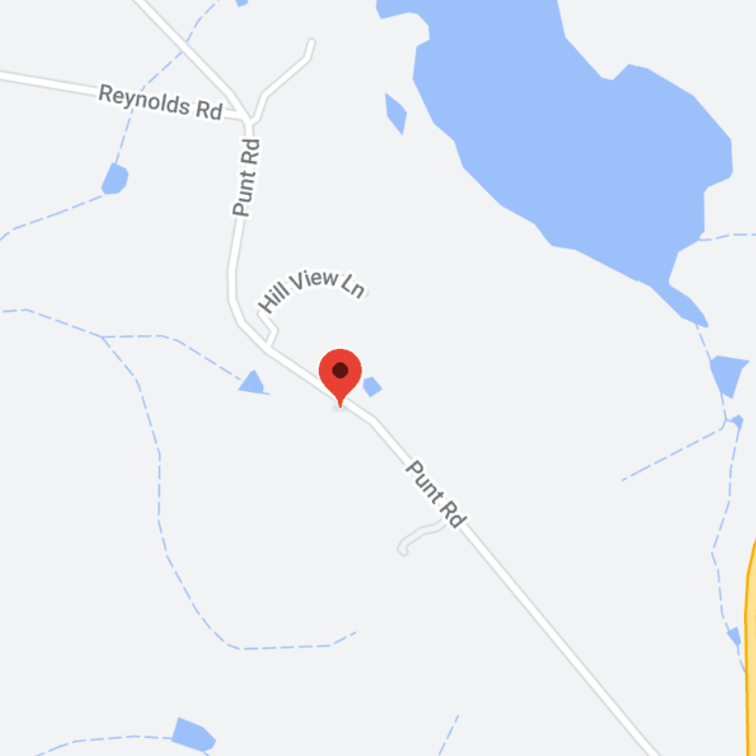

wombat honey
Wombat honey is 100% natural Australian honey sold to you at your convenience. They sell a range of products, from flavoured creamed honey, creamed honey, honeycomb, natural honey, and more. You can easily find their honey shop on the side of the highway along wombat Creek. Otherwise, you can easily find Wombat Honey at field days and markets, such as the East Gippsland Field Day or Farm World.
3800 Princes Hwy, Wombat Creek VIC 3888, Australia
Happy Bear Honey
Happy Bear Honey is a small apiary located in Far East Gippsland, Victoria, Australia. They aim to create the best honey, the way it used to be. their honey is raw, cold extracted. Happy Bear honey have a range of products from honey soap, brooch, creamed honey, and natural honey. You can order online a pickup at happy bear honey 11 William-Hunter Dr, Marlo VIC 3888, Australia. Otherwise, you can easily find them at many local markets and field days, such as lakes entrance market and East Gippsland Field Day.
11 William-Hunter Dr, Marlo VIC 3888, Australia
Raymond Island Honey
Raymond Island Honey is run Colin & Wyonne. They started their business thirty years ago with six hives, today they have two hundred working hives. All their honey is pure cold-pressed honey and come in a variety of flavours. You can find their Honey at the local Farmers Market Bairnsdale. Otherwise, their honey is distributed across many local stores, such as Lazzaro bros.
135 Gravelly Point Road, Raymond Island, VIC 3880
Tambo Valley Honey
Tambo Valley Honey is run by Bruthen beekeeper Ben Murphy. They care about bring the country to you and creating good quality high flavour products. while also supporting local business and farmers. Although located up Tambo way they are in the process of opening their very first shop in Bruthen. They also provide distribution centre around Melbourne to allow people to easily pick up their favourite honey products.
No locations yet, shop Is being built in Bruthen.
No Name
This honey is located outside the front of the house, in a small wooden stand. The honey has no name and is a mix of different pollen from around the area.
89 Punt Rd, Metung, Victoria
